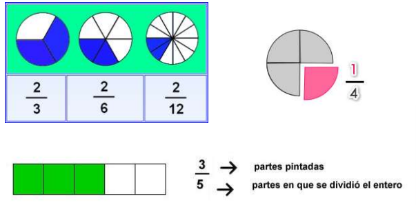
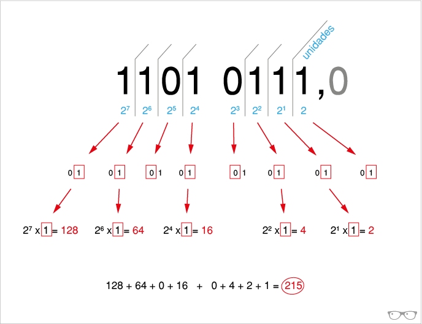
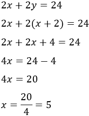

La capacidad de almacenamiento se refiere a la cantidad máxima de datos que un dispositivo o sistema puede guardar. Esta capacidad se mide en unidades como bytes, kilobytes, megabytes, gigabytes o terabytes, donde cada unidad representa una cantidad específica de datos.
*️⃣ Bit: La unidad más pequeña de información, representa un 0 o un 1.
*️⃣ Byte: Equivale a 8 bits y puede representar un carácter (una letra, un número, etc.).
*️⃣ Kilobyte (KB): 1024 bytes.
*️⃣ Megabyte (MB): 1024 kilobytes (aproximadamente un libro de 200 páginas).
*️⃣ Gigabyte (GB): 1024 megabytes (aproximadamente 1000 libros o 1000 canciones en formato MP3).
*️⃣ Terabyte (TB): 1024 gigabytes (aproximadamente 250,000 canciones en formato MP3).
*️⃣ Petabyte (PB): 1024 terabytes.

Un porcentaje es una forma de representar una fracción de un total de 100. Se expresa como un número seguido del símbolo "%" y se lee "por ciento". Por ejemplo, 50% significa 50 de cada 100, o la mitad del total. Los porcentajes se utilizan para comparar proporciones y describir cambios en cantidades.
En términos más simples, un porcentaje es una manera de expresar una parte de un todo, donde el todo se considera dividido en 100 partes iguales.
En matemáticas, una fracción, número fraccionario, es la expresión de una cantidad dividida entre otra cantidad; es decir que representa un cociente no efectuado de números. Por razones históricas también se les llama fracción común, fracción mixta o fracción decimal. Las fracciones comunes se componen de: numerador, denominador y línea divisora entre ambos (barra horizontal u oblicua). En una fracción común el denominador "b" expresa la cantidad de partes iguales que representan la unidad, y el numerador "a" indica cuántas de ellas se toman.
|  |
El sistema binario es un sistema de numeración en el que los números se representan
utilizando las cifras 0 y 1, es decir solo 2 dígitos (bi = dos). Esto en informática y en electrónica
tiene mucha importancia ya que las computadoras trabajan internamente con 2 niveles: hay o no
hay de Tensión, hay o no hay corriente, pulsado o sin pulsar, etc. Esto provoca que su sistema de
numeración natural sea el binario, por ejemplo 1 para encendido y 0 para apagado.
También se utiliza en electrónica y en electricidad (encendido o apagado, activado o desactivado,etc.).
|  |
Una ecuación lineal es una ecuación donde el exponente más alto en las variables dadas es uno. Una ecuación lineal en una variable es una ecuación con una variable con exponente uno, por ejemplo,ax+b=c, dondea se llama el coeficiente dex,b yc son coeficientes constantes.
|  |

|

|

|